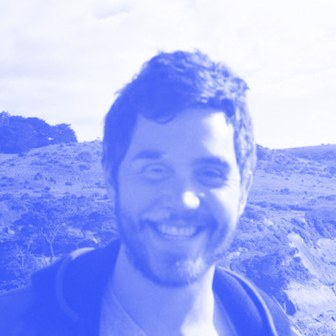

An interview with Colin Daymond Hanna
Creating light in the darkness
Co-founder, Earendil
August 2026
Colin Daymond Hanna climbed a mountainside in the Vienna alps to take this interview (thank you Starlink - unsponsored). It felt right - Colin describes himself as a child of the earth, where the through line of his life runs from Jakarta to Hong Kong to California, from B&W film photography to open water swimming, and now to Earendil, the public benefit corporation he co-founded with Armin Ronacher, makers of Pi and Lefos.
This conversation is a behind the scenes look at how a creative philosophy gets formed and lives upstream of product and brand. We started with the years that shaped how Colin sees… a mom who drew architectural plans by hand, a camcorder in 1990s Chinese villages, black and white photography, hugs on the streets in Cairo. Each experience taught him something he believes… which he and Armin committed to paper before building anything. And now every company decision traces back to them - in the products (a minimalist harness you own, transparent and open, multi-party), the hires (kindness, family first, english majors), the brand (hand drawn logo, waves coded from personal photography, literary references with meaning). All of it in service of the founding ethos - light in the darkness.
Background
A child of the earth
Tell us who you are and your story into the early days of founding Earendil.
It starts with my mom and my dad. My mom was an architect at MIT in the 1970s, when very few women were studying architecture there, when people still did all the plans and drawings by hand, so I always had this artistic streak that was technically grounded from that time. My father is an economist. He worked at the World Bank.
I’ve been lucky enough to really feel like a child of the earth. I don’t mean that lightly. My first memories are from Jakarta, Indonesia, where I grew up the first five or six years of my life. I spent a lot of my boyhood in Hong Kong. But I’m a rooted Californian. My parents’ extended families on both sides were all in the Bay Area, so we were always home for holidays and summers, and we moved back when I was in high school.
I’ve always been interested in how you can let yourself be a filter in a medium. I used to travel to China a lot in the 90s, and there’s camcorder footage of me as a nine-year-old kid going around interviewing people in Chinese villages. There’s even one where someone has a desktop computer and they were selling insurance, in 1997. You, as the receiver of the information, act as a filter for the information, but the information itself is not being generated by you. There’s nothing artificial about it. I felt that pull because I’ve been exposed to so much, and I find so much of it really beautiful. I find humanity really beautiful, our planet really beautiful. And I feel this intense desire to try to share that.
Maybe the other dimension that’s important about me is I feel at home in the water. I was a swimmer from a very young age, and I’m a surfer, swimmer, and diver now. I’m teaching my sons to swim. My goal is that next summer I’ll go to the masters world championship with my dad and compete there together.
Why black and white
On your art and photography, why black and white? What do you love about it?
I had a mentor in black and white photography, a woman named Christine, who unfortunately passed away last year. She was herself an assistant to a photographer named Frank Horvat, a French black and white photographer who does wonderful portraiture.
Black and white focuses the mind on elements that are even more fundamental than what we see with our own eye. There’s a minimalism to it - it contains less information than the way we traditionally perceive reality, so there is a focus on how the subject is being framed. Where does the focus of the lens lie? What is the quality of the light, and where does the light fall? What are the qualities of the shadows and the blackness? Black and white isn’t really black and white. It’s shades. You can get a level of subtlety and nuance in black and white photography that I think is hard to come by in color photography.
SoundCloud in Cairo
How did working at SoundCloud influence you?
I was hired as a junior person at SoundCloud to be a generalist growth and product person looking at markets outside the US and Europe. SoundCloud had this phenomenon where the second largest market for SoundCloud was Egypt, and nobody in the company had any idea why. I also got to sit next to these devops engineers who were developing Prometheus at the time, an open source observability software on Kubernetes. I traveled to Egypt, and I was getting hugs on the streets of Cairo when they saw me in my SoundCloud t-shirt. That’s how culturally important SoundCloud was to them. At the time, Egypt was 90M people, 20M smartphone users, and 8M logged-in monthly active listeners. So 40% of Egyptian smartphone users were listening to SoundCloud every month.
There was a documentary about this genre of music, mahraganat, a mix between electronic music and rap, that was big in the slums of Cairo. Because it was associated with the slums and the poor castes of society, the traditional A&R functions in the music industry didn’t take it on. So the only distribution channels were YouTube and SoundCloud, but this was before YouTube Premium and it was too expensive. So I got to see this open source infrastructure software the engineers were developing in Berlin help disseminate this music so people could launch their careers. It was an influential chapter for me because it showed that software can be good - if it’s designed well, transparently, and with the good of the user in mind.
Beliefs
Earendil as a vessel
You’ve had a series of arcs in your career, and now you’re building Earendil. What is Earendil’s purpose, and what are some of the operating principles you live by?
Earendil was really created by Armin and me as a vessel - a vessel for products and tools that will make things better for us humans, harnessing the most powerful technologies of our time, but doing all of that to serve us. We defined that at the very outset of the company.
Earendil is a particularly important figure in Tolkien’s legendarium. He’s the first character Tolkien described, and he played this important role of bringing light to the darkness. We feel that people need that light right now, as a beacon of hope. There’s so much dystopia and doomerism out there, and so much information is mediated by an algorithm, and it would be better if fear was replaced by optimism. If all we do is carry around fear all day, every day, what comes out of that is a negative externality. So we wanted our company, the people we work with, and the products we build to instill hope in people, and empower them.
We started Earendil as a public benefit corporation, to craft software and open protocols that strengthen human agency, bridge division and ignorance, and cultivate lasting joy and understanding. Anything we can build that’s in service of those goals, we’ll look to do. Anything that violates those things, we won’t do.
We defined seven principles and seven modalities for how we do things. Those came as a function of our experiences in the places we worked before. There are things in there like “be compassionate and be kind.” There are things like “family first,” which is not to be misconstrued as a lifestyle job. Armin and I are both fathers, and there’s a stake in the sand that our family is more important than our work. Period. But we’re super intense about our work. Successful people understand that building a family and doing that well requires sacrifice and hard work, and people who recognize that can often do incredible things in their work too. The two are not mutually exclusive. But where there’s a trade-off, you pick family.
Tenets of hope
Within the goal of building tools that instill optimism in people, how would you stack rank the most important tenets for achieving that? Is it who’s building it, the messaging and brand, the product experience… something else?
The first most important tenet is transparency. Just being forthright with our community, our customers, our users. It’s something Armin brought from Sentry, where they did that really well. Imagine something went wrong. The reflex is to tell everybody about it, not to hide it or adapt the messaging to do damage control. If we’re vulnerable with our users and our customers, that empowers them, because it means the thing they’re spending their time and attention and money on is honest with them.
The second core tenet is allowing people to make something their own. This is something people love about pi. Through that, users develop a relationship with their tool.
The third tenet is that we’re going to try our best to not do things in a way we’d feel ashamed or guilty of. We’re going through a heat wave in Europe, people are inhaling noxious fumes on the east coast because of forest fires, and you may or may not be familiar with the fact that some people are feeding data centers with jet fuel just to maximize GPU utilization. That’s something we observe, and we step back and say, we can do better than that. As a company, we’re going to be looking up and down the supply chain at how we’re doing things. For the variables we can control or influence, we’re going to try to make sure they don’t suck. I think fueling data centers with jet fuel sucks. I can’t look my kids in the eye and say, “This is how we’re making money, and by the way, somebody somewhere is feeding a data center jet fuel to produce a bunch of slop.”
Building
The harness explained
Right now, on the product side, the right way to describe us is a harness company. The harness is an interesting place because it’s probably the lowest level interaction point of a lot of the software that sits on top or alongside the model itself. You have the inference provider, and the inference API sitting alongside doing important things, and the sandbox in which things are running is also an important factor. But the harness is, in a lot of ways, governing the behavior of the model.
Lefos was also built with pi, but lefos is a thicker harness that also has elements like session storage (how your session is stored, where it sits, who can understand, access, and reproduce it) modeled as email conversations. That was a deliberate, important choice, as we see more and more human conversations are happening with machines. In the case of lefos, it was built primarily for the email channel, where all the archives and records are yours. You have a legal right to the correspondence, you can search them, index them, port them over to other things. In the case of pi, the session storage is formatted in JSON, and it’s happening locally on your machine. Some of the APIs the model providers are offering mean they’re the only ones who can properly reproduce that session on the server side, and you can’t on the client side anymore - which is a problem.
How would you describe a harness to someone who isn’t from the AI world?
It’s not the perfect analogy (but no analogy is perfect, otherwise it wouldn’t be an analogy), but I think of the model as the engine of a car, and the harness is the chassis. The harness is the frame through which the production of force by the engine is mediated. The chassis connects it to a set of wheels (a set of other components) that allow you to have a car (a chatbot, agentic application, a recruiting agent, a code review agent, etc). You can make certain decisions on the body of the car, but the chassis is governing fundamentally what the core components of the vehicle are.
The harness is a framework through which the model can choose to manipulate a set of tools, and it uses those tools to achieve certain aims. The harness is governing, “here’s what you can do, and here are the different ways you can try to satisfy the prompt.” It has a system prompt that’s moderating the model’s behavior. It’s setting the pace for the model, “here’s how much work you should do until you think you’re finished,” or “here’s what you should do if you’re running out of time but your work isn’t finished yet.” It’s setting a whole bunch of constraints and describing a set of tools that help govern how the model works. So you fit the engine into the chassis to make it work.
What’s also nice about it, at least in the form of pi, is it can be one harness where you can swap out the model. I can govern a bunch of things that I own, and the AI model that sits underneath it, I can swap in and out - that is something that is mine. This is important to people.
Waves, logos, and tiny details
What is a specific product or brand decision that you particularly love? And what was the creative process of how you landed there?
Something I’ve been deliberate about in my creative process has been getting the framing and branding right for us as a company. Armin and I have personally designed a lot of it. For example, Armin personally coded the algorithm that does the waves on the website. The first landing page of our website was a black and white photograph of the ocean with a long horizon, a relatively long exposure photo, inspired by the photographer Sugimoto. I had taken the photograph driving from the mountains down to the sea (it’s still on my personal website). We made this decision partly because Eärendil was a mariner, a journeyman on the sea. One day Armin decided to add waves. He worked on this for a while until it was right. It came from somewhere that was earthly and real, but crafted into the digital realm.
The logo and vectors themselves are something I designed. I did it by hand first. It’s designed after an elven boat, but it’s become this abstract shape. And the pi.dev website is something we’ve all worked on as a team. Rami, who has done a lot with the Tetris animation. At one point, the Tetris animation was taking too long, and we realized that optimizing it by 40% saved days of human life as a result. Even as founders, we care a lot about the small little details.
For the branding on pi, why Tetris and why the grid lines?
It comes down to the composability and extensibility of pi. Computers and machines can do things that are just fun, and we want working with pi to feel fun for the end user. It also speaks to the fact that you can build complex shapes out of things that feel minimal and primitive independently and on their own.
The art of human-written language
With lefos, we have a small, growing cohort of loyal people who love it, quite a few businesses and investment firms who use it a lot internally, people whose OS is email. The voice of it, the system prompt, the personality - this is something we’ve spent a lot of time crafting and iterating. It’s so interesting that you can now moderate such important aspects of how a software system behaves using natural language. One of our designers studied English. Many english majors are trained to speak and write concisely, find the right words, use the right style… Language allows you to pack information in really elegant ways if you can find the right words for things.
We’ve been getting good responses on our recent blog posts. Armin wrote a post that was number one on Hacker News three days ago, and another engineer, Christina, wrote a post that was number two. One of the principles in our company is we do not have LLMs produce writing for us. Sure, we’ll have an LLM produce a summary of a call transcript, that’s fine, they’re good at compression. But when we want to convey information to other humans, it’s so presumptuous to have it author something and not at least cite it. If you’re using an LLM to produce writing that you’re sending on your behalf, cite the model, and ideally cite the harness too.
We all have this incredible bounty of neurodiversity within our own skulls that comes from formulating our own experiences. Go ahead and use LLMs to augment and harness information you didn’t have access to, but the output you’re sharing with a teammate, boss, friend, partner - they want to hear from you. They don’t want to hear from one of six sets of weights being produced by billions of dollars of hardware. There’s so much bad writing out there now, and within three sentences, you can tell when a human did not write this.
There’s a reason those posts are going viral. Something we’re craving too is actually reading the prompts people are crafting, how they’re talking to their harness and their coding agents, and the subtle differences in the language they use within their process.
Instead of sharing the slop that came out of the model, I’d rather see your prompt, then your model output. With your prompt, I can go send it to twelve different models. The prompt is what’s more unique - it’s the crux of the idea.
Voice and the machine in the room
We’re also doing a lot of prompting through voice. Voice is a richer medium than people give credit to. Right now, for example, we’re having a nuanced conversation, and it’s not requiring me to stare at a screen… I’m looking a couple thousand kilometers southeast. Voice is a minimalist channel, and it allows you to have a rich conversation while also being present in your physical surroundings. It allows software to fall into the background when it’s appropriate, and your foreground can be the real world again.
Voice also gives us an opportunity to be more multi-party. Most harnesses aren’t outputting voice, and that’s something we are working on. We should be having shared conversations with machines more. It will lead to fewer tokens and a better outcome. So much of building in AI now is people gathering together, then breaking apart, then seven different people input seven different versions of what they think needs to get done to seven different models, consuming seven times the tokens, and then they come back and say “this is what I did and this is what I think.” If those conversations were happening with the machine in the room, it would be a lot more efficient token-wise, but we’d also arrive at a version of truth more readily.
Rapid fire
My favorite book is Barbarian Days. It’s an autobiography of a man who’s a journalist and writer for the New Yorker, but the book is about how surfing has been this central thread to his life. The way he describes his relationships, having kids, and pursuing a career while also having something else of value to him… I appreciate that perspective. So many times when you get to know someone in public, it’s people bragging about their career and how much money they made, and you don’t get a sense of richness or depth. What else has this person’s life brought them? He’s one of the most lauded writers of our time, but also he’s been a father and an incredible surfer. It’s inspiring.
Nature. The world around us is so rich. It’s fun having young, school-age kids and seeing the awe with which they confront new animal species and new physical phenomena. If you enter nature with a perceptive eye, it’s really hard not to be floored by the beauty, whether that’s mountains, oceans, bodies of water. It’s silent and calm, a place that can reflect back and help structure your own thoughts. Finding this clarity helps you execute the right things rather than get pulled in a million directions by everything in the media.
Also traveling. One of the first trips Armin and I took was to China, because China has forked, and in some ways the fork is technologically ahead of us and in other ways behind us. We took the high speed rail through the country. I’m lucky enough to speak Mandarin, so I could converse with everyday people on the street. And I was in Kenya just last month for my niece’s baptism, meeting young engineers studying computer science who are trying to figure out how they can not get left behind by what they see as this incredible improvement in technology. We’re eight billion people. I come from a place where I think we’re all the same. We all have the same biological needs, a shared set of what makes us human, and then we express that differently in our cultures. You find smiling faces everywhere, people having kids, men and women working hard… people starting families, burying their moms and dads, learning. We’re just doing it in different ways.
There’s an important role for everybody who’s lucky enough to be closer to the center of this thing. All of us have responsibility here. These machines can compute weights that have this tremendous capacity to compress the information humanity has formed up to this point. How we wield that, how we disseminate that technology, how it gets grafted onto humanity - it’s such an important time. Most people are focused inwardly on the technology, the next decimal point model and its improvements against benchmarks, with way less thought around how it’s going to be deployed in a classroom, the right way to bring it to people. Small things, like how we should start citing its outputs, transparency - these kinds of tenets are going to be really important to influence the positive and negative energy that’s to come.